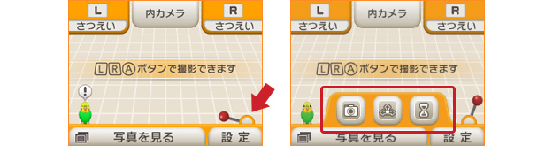
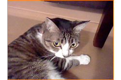
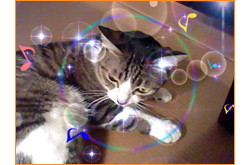

下画面メニューにある赤いレバーをタッチすると、3つのアイコンが出てきます。ここでは
6種類の撮影モードの切り替えや、手動3Dフォーカス設定、「セルフタイマー」の機能を利用することができます。
3D撮影に慣れてきたら、これら3つの機能もいろいろと試してみてください。さらに面白い写真が撮れるようになるはずです！

試しに「暗いときカメラ」モードを使ってみると、暗いところにいるネコも明るい感じに撮れました！
「白昼夢カメラ」や「ピンホールカメラ」モードに切り替えると、それぞれぐっと雰囲気が出ます。思わず写真に撮るのを忘れてしまいそうです。

かわいく撮りたいなら、「キラキラカメラ」モードがオススメです。ふーふーと息を吹きかけて、キラキラしたり、花が咲いたり。いつもとはちょっと違った印象で撮れるかも！？
ぜひ、実際にいろいろなモードで身近なものを撮ってみてください！
セルフタイマーでは、3DS本体に向かって「OK」と呼びかけるとシャッターを切ることもできます。これを使えば、3DS本体をベストポジションに固定しておき、自分も一緒にみんなと集合写真を撮影したりすることが可能です！ 3DS本体を固定してセルフタイマーでシャッターを切れば、手ブレを防ぐこともできるので、よりクッキリとした3D写真を撮りたいときにもオススメです。
※ 3D写真はニンテンドー3DS本体でご覧いただけます。